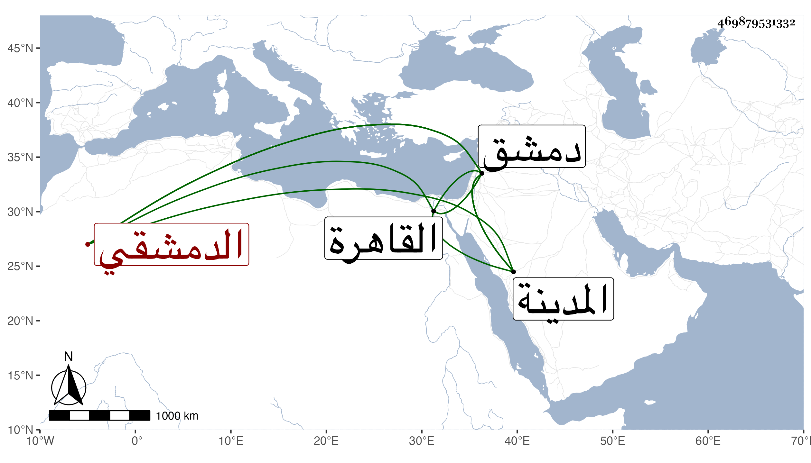

0902Sakhawi.DawLamic.ITO20230111-ara1.EIS1600.469879531332
Biography ID: 469879531332
869
علي بن عثمان بن عمر بن صالح العلاء أبو الحسن الدمشقي ويعرف بابن الصيرفي . ولد سنة ثمان وسبعين وسبعمائة ، وقال بعضهم سنة ثلاث بدمشق ونشأ بها فحفظ القرآن وكتبا وتفقه بالشهاب الملكاوي والشرف الغزي وبرع في الفقه وأصوله والعربية والحديث ، وقدم القاهرة في سنة ثلاث وثمانمائة فلازم البلقيني والعراقي في الفقه والحديث وقرأ الأصول على العز بن جماعة وسمع عليهم وكذا على الكمال بن النحاس وابن أبي المجد وابن قوام وابنة ابن المنجا والبالسي والبدر حسن بن محمد بن محمد بن أبي الفتح بن القريشة ، ومما سمعه عليه المغازي لموسى بن عقبة في آخرين ببلده وغيرها ، وحدث ووعظ وأفاد ودرس وتصدر بالجامع الأموي وناب في الحكم في أواخر عمره واستقر في تدريس دار الحديث الأشرفية بدمشق عقب موت حافظها ابن ناصر الدين فلم تطل مدته وكذا ناب في تدريس الشامية البرانية بل درس بالغزالية وانتفع به جماعة من الشاميين كالرضى الغزي والزين الشاوي والشمس ابني سعد ومفلح وغيرهم ، وكان إماما علامة مفيدا متواضعا متقشفا في ملبسه مديما للإشغال والإشتغال متوددا للناس سليم الخاطر واعظا ، وله تواليف منها الوصول إلى ما وقع في الرافعي من الأصول في مجلد ونتائج الفكر في ترتيب مسائل المنهاج على المختصر في أربع مجلدات وزاد السائرين في فقه الصالحين شرح التنبيه وتهذيب ذهن الفقيه الساري لما وافق مسائل المنهاج من تبويب البخاري هو كبير لم يكمل وكتاب في الوعظ مفيد وديوان خطب ، وهو في عقود المقريزي . مات في رمضان سنة أربع وأربعين بدمشق وكانت جنازته حافلة وصلى عليه في مصلى العيد لكون سكنه كان خارج المدينة بالتعديل والعادة جارية بعدم إدخال من يموت خارجها وقال بعضهم بل لضيق الجامع الأموي عن المصلين رحمه الله وإيانا .
